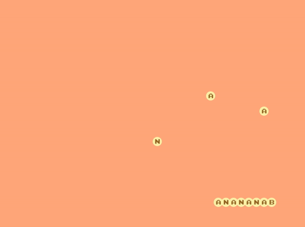
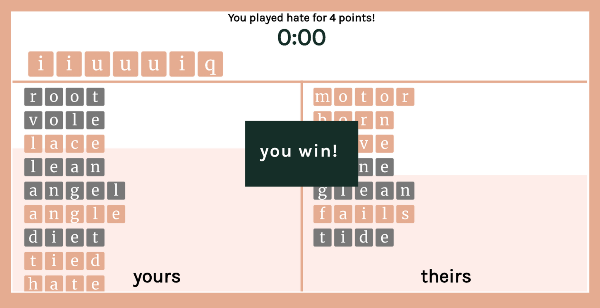
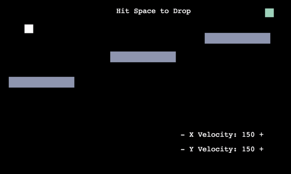
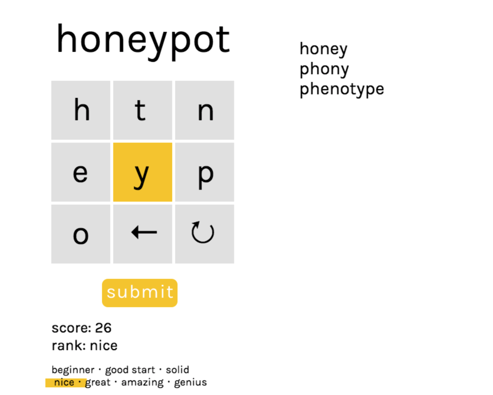
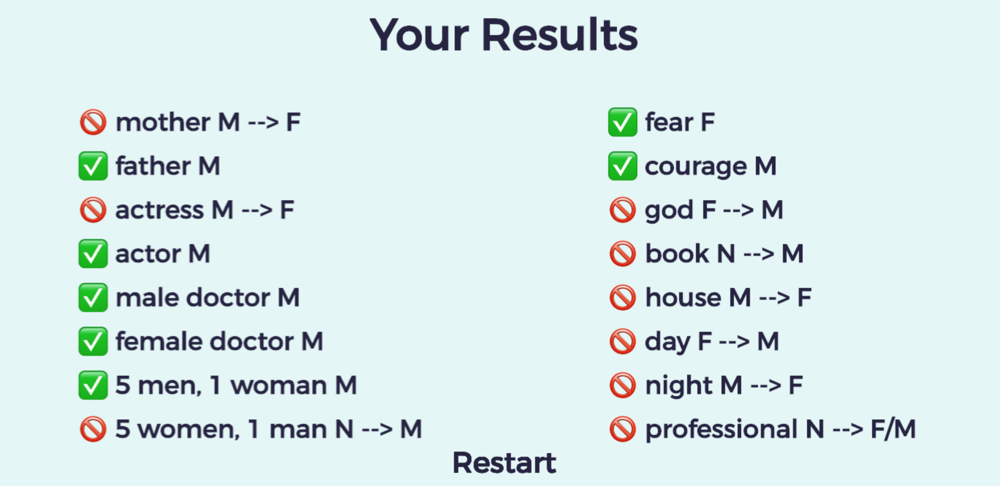
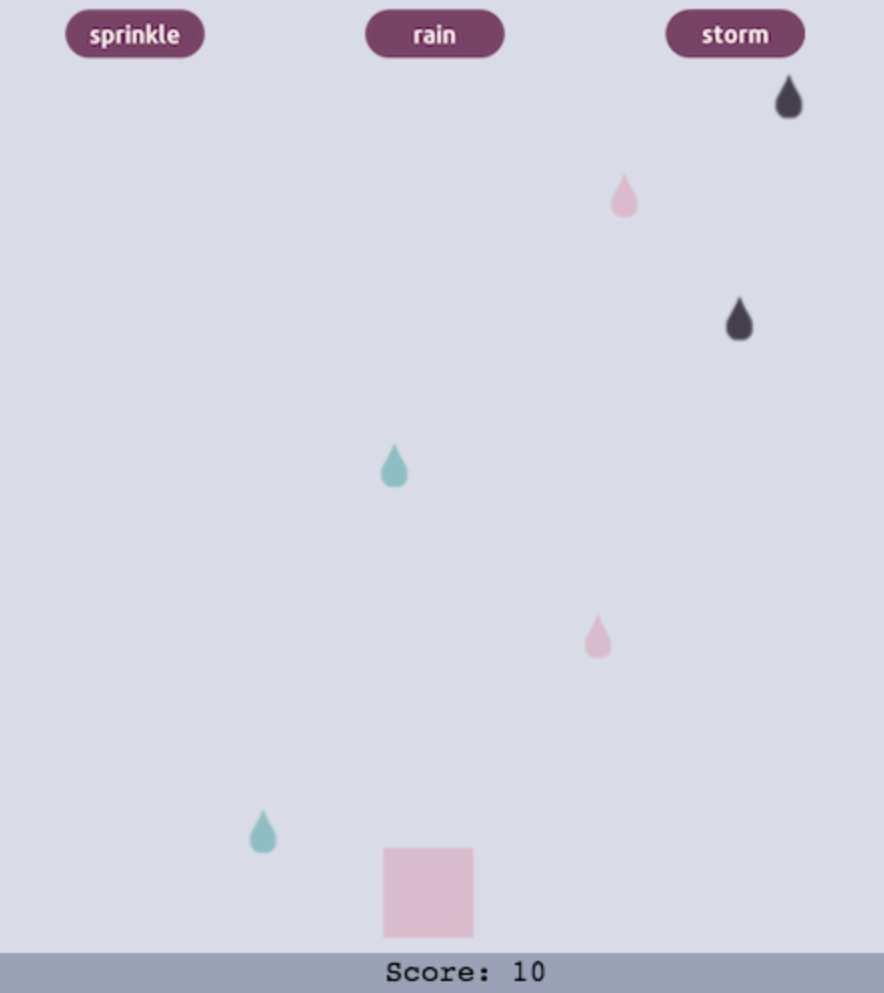

Simple web games
Here are some game prototypes made with
Phaser 3, a JS game engine.
Phaser Labs was my go-to resource. These are not mobile friendly :/

word snake
play
code
I made this because I wanted to make a word game, but all I could find were snake tutorials. Spell out "banana", and continue tacking on alternating "n"s and "a"s. The game ends when you repeat a letter or the snake eats itself.
This was the first game I ever made!

grabble
play
code
Grabble is a 2-player word game in which players make words from a communal tile bank, and can steal each other's words by adding to them and/or rearranging them. Grabble uses Heroku + Node.js!
To play, press the start button after you and a friend have both launched the
site.

drag + drop
play
code
Rearrange blocks to bounce and hit a target. Levels are procedurally generated. You can change the velocities, but you rarely need to.

spelling cube
play
code
This is a copy of the lovely NYT puzzle
spelling bee. Make words of at least 4 letters that contain the center letter. There's just one word set hardcoded in for now.

french gender game
play
code
I made this game for a feminist theory class, and it highlights gender bias and inconsistencies in the French language. Click through a quiz, view your results, and play four illustrative mini games.

waterfall
play
code
Catch raindrops that match the block color at the bottom. There are three different difficulty levels.
jan 2020